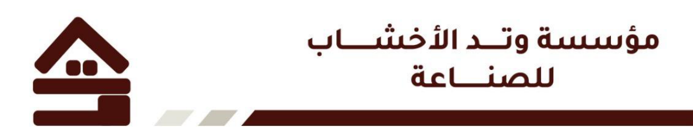
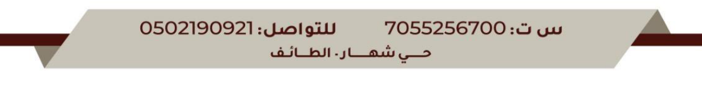

بسم الله الرحمن الرحيم
إنه في يوم {{ fld('day', 60) }} الموافق {{ fld('date', 70) }}م، تم الاتفاق بين كل من:
الطرف الأول – العميل: الاسم: {{ fld('client_name', 82) }} | رقم الهوية: {{ fld('client_id', 54) }} | رقم الجوال: {{ fld('client_phone', 54) }} | العنوان: {{ fld('client_address', 44) }}
الطرف الثاني – المنفذ: مؤسسة وتد الأخشاب للصناعة | السجل التجاري: 7055256700 | يمثلها: أحمد تركي | رقم الجوال: 0502190921 | العنوان: حي شهار – الطائف
يتعهد الطرف الثاني بتصنيع وتنفيذ وتركيب كوخ خشبي لصالح الطرف الأول في الموقع المتفق عليه بين الطرفين، وذلك وفق المواصفات والمقاسات والتصميم وعرض السعر المعتمد من الطرف الأول.
ويشمل التزام الطرف الثاني ضمان أعمال التنفيذ وفق أحكام الضمان الواردة في هذا العقد، وبما يتفق مع المواصفات والمواد المعتمدة وعرض السعر.
ويعتبر عرض السعر والمواصفات والمخططات المعتمدة والملحقات جزءًا لا يتجزأ من هذا العقد.
نوع المشروع: {{ fld('project_type', 160) }}
موقع التنفيذ: {{ fld('site', 160) }}
المساحة التقريبية: {{ fld('area', 40) }} متر مربع.
وتشمل الأعمال المتفق عليها:
ولا تعتبر أي أعمال أخرى غير مذكورة في عرض السعر أو المواصفات المعتمدة مشمولة ضمن قيمة العقد، إلا بموجب اتفاق مكتوب بين الطرفين.
بلغت القيمة الإجمالية المتفق عليها لتنفيذ المشروع: {{ fld('total', 45) }} ريال سعودي، فقط: {{ fld('total_words', 150) }} لا غير.
وتشمل القيمة الأعمال والمواد الموضحة في عرض السعر والمواصفات المعتمدة فقط.
| {{ label }} | {{ fld(key + '_pct', 30) }}% — {{ fld(key + '_amount', 50) }} ريال |
| الإجمالي | 100% — {{ fld('total2', 50) }} ريال |
ويحق للطرف الثاني إيقاف العمل مؤقتًا في حال تأخر الطرف الأول عن سداد أي دفعة مستحقة، ولا تعتبر مدة التوقف ضمن مدة التنفيذ.
مدة تنفيذ المشروع هي {{ fld('duration', 25) }} يومًا، تبدأ من تاريخ استلام الدفعة المتفق عليها واعتماد التصميم والمواصفات وجاهزية موقع التنفيذ.
يحق للطرف الأول طلب تعديلات على التصميم أو المواصفات قبل أو أثناء التنفيذ، على أن يتم الاتفاق مسبقًا على قيمة التعديل والمدة الإضافية اللازمة لتنفيذه. ولا يلتزم الطرف الثاني بتنفيذ أي أعمال إضافية إلا بعد اعتمادها من الطرف الأول.
يقدم الطرف الثاني – مؤسسة وتد الأخشاب للصناعة – ضمانًا على أعمال التنفيذ لمدة {{ fld('warranty', 20) }} سنوات من تاريخ الاستلام النهائي.
يشمل الضمان العيوب الناتجة عن سوء التنفيذ، وذلك في حدود الأعمال والمواد الداخلة ضمن نطاق التزام الطرف الثاني.
نطاق الضمان: لا يشمل الضمان أعمال الدهان فقط. ويشمل الضمان تسرب المياه من الأسقف، كما يشمل مقاومة الخشب لعوامل التعرية والعوامل الجوية، متى كان سبب الخلل راجعًا إلى سوء التنفيذ أو المواد الداخلة ضمن نطاق أعمال الطرف الثاني.
ولا يسري الضمان على الأضرار الناتجة عن سوء الاستخدام أو التعديلات أو الإصلاحات التي تتم من قبل الطرف الأول أو أي طرف آخر دون موافقة الطرف الثاني.
عند الانتهاء من تنفيذ المشروع، يقوم الطرف الأول بمعاينة الكوخ واستلامه. وفي حال وجود ملاحظات بسيطة لا تمنع الانتفاع بالمشروع، يتم تسجيلها في محضر الاستلام، ويلتزم الطرف الثاني بمعالجتها خلال مدة مناسبة يتم الاتفاق عليها. ويعتبر المشروع مستلمًا عند توقيع محضر الاستلام أو الانتفاع به من قبل الطرف الأول.
في حال رغبة الطرف الأول في إلغاء العقد بعد بدء التصنيع أو التنفيذ، يتم احتساب قيمة الأعمال والمواد التي تم تنفيذها أو شراؤها، ويتم خصمها من المبالغ المدفوعة. كما يحق للطرف الثاني المطالبة بقيمة الأعمال المنجزة والمواد التي تم تصنيعها أو تجهيزها خصيصًا للمشروع.
يسعى الطرفان إلى حل أي خلاف ينشأ بينهما بالطرق الودية أولًا، وفي حال تعذر الوصول إلى حل ودي، يكون لكل طرف حق اللجوء إلى الجهات المختصة في المملكة العربية السعودية.
الطرف الأول – العميل: الاسم: {{ fld('client_name_sig', 120) }} التوقيع: ........................................ التاريخ: {{ fld('date_sig1', 60) }}م
الطرف الثاني – مؤسسة وتد الأخشاب للصناعة: اسم المسؤول: أحمد تركي التوقيع: ........................................
الختم: ........................................ التاريخ: {{ fld('date_sig2', 60) }}م